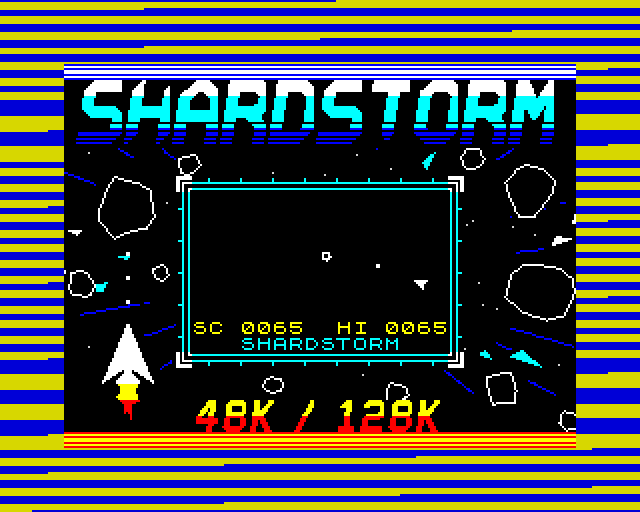

48K128K12 November 2026
Play Shardstorm while it loads
An ordinary-looking tape, loading stripes and all - but once the loading screen is in, a cut-down Shardstorm plays in the box in the middle while the rest of the game loads. Your best score carries over into the real game. 48K and 128K.
Tape games of the 1980s sometimes gave you something to play while they loaded; this is Shardstorm's. The tape looks and sounds like any other - the ROM's blue and yellow stripes, no border tricks - but the black box in the middle of the loading screen is a playfield: O and P turn, Q thrusts, SPACE fires.
Shards drift and wrap round the box; big ones split in two when shot, small ones go, and a new wave comes when the box is clear. A crash costs you your score, but your best is kept - and when the load is done and you press fire, Shardstorm starts with it as its high score.

How it works
A game between the edges
Our loader times the tape's pulses itself. After every bit of every byte - seven times a byte - it hands a slice of time to the game: one short piece of game code, always exactly the same length, so the loader knows how long it was away and still reads the next bit right. A piece moves a shard, or reads the keys, or draws part of the ship. About 30 pieces make a frame, and the game runs at 25 frames a second of tape, steady through the whole load.
Every piece of game code is measured in the build, in thousands of random game states - shards alive or not, wrapping, colliding, keys held or not - and has to take one length in all of them, or the build stops.
Where it lives
The game keeps running after the load until you press fire, so it lives where no part of Shardstorm ever loads: the same gaps on both machines. The part that only runs once at the start sits where the last part of the game later loads over it. Before Shardstorm starts, the loader clears its own memory and writes your best score where Shardstorm keeps its high score.
An ordinary tape
The game's parts are standard blocks at the ROM's own speed, so the plain .tap works in any emulator that plays tapes in real time. The break key is CAPS SHIFT and SPACE, the Spectrum's own BREAK, since SPACE fires.
How it was checked
Checked by shardgame.js, loading the tape through our emulator's tape deck with a scripted player at the keys: every bit read right; the ship turned all 16 ways, moved and fired; shards split and went, and the score always matched; nothing ever drawn outside the box; the game's picture matching its own records, byte for byte, hundreds of times over; LOADED and PRESS FIRE; then Shardstorm's menu with the right high score - on both machines.
Screens
As our emulator draws it
Full frames, border and all. Click a picture to see it bigger.


Download
Load it yourself
For the 48K and the 128K. Each machine has its own tape; its .tzx and .tap hold the same blocks.
- In an emulator (ZX Spin, Retro Virtual Machine, Fuse and others): choose the machine the demo says - a 128K or +2 for the 128K ones - and open the
.tzxor the.tap. They hold the same blocks; use whichever your emulator prefers. On a 128K, pick Tape Loader; on a 48K, typeLOAD "". - Switch off instant and fast loading. The custom loaders read the tape signal themselves, edge by edge: an emulator that skips the tape skips the loader, and everything it does while it loads.
- On a real Spectrum: play the
.tzxinto the EAR socket from a TZX player. These are for the original machines' timing: the 48K, the 128K and the grey +2.